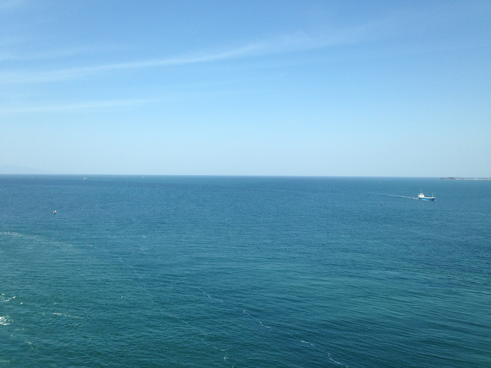

1
前半段：高松為基地
抵達後先住高松，適應右駕與日本道路，再安排鳴門海峽、直島與高松周邊。
給家人看的行程介紹｜7/18–7/23
家人介紹版 v3｜2026-06-23 21:42｜真實照片版

FAMILY GUIDE · SHIKOKU ROAD TRIP
這一頁給家人出發前先了解旅程。現場導航、停車、船班與駕駛提醒仍由駕駛／導遊版首頁負責。
我們從桃園飛到高松，先住高松三晚，走鳴門海峽與直島藝術島；接著一路往西，經過善通寺、金刀比羅宮、丸龜城到松山，最後住在道後溫泉兩晚，再開回高松機場返台。
先看大方向，不用理解每個導航細節
抵達後先住高松，適應右駕與日本道路，再安排鳴門海峽、直島與高松周邊。
退房後一路拜訪善通寺、金刀比羅宮與丸龜城，依體力取捨，傍晚抵達道後。
松山城、大街道、銀天街與道後溫泉街，是比較放鬆的城市與溫泉行程。
家人最需要先知道的出發、回程與住宿安排
CI0178｜桃園 → 高松
CI0179｜高松 → 桃園
7/18–7/21：Hotel Route Inn Takamatsu Yashima
7/21–7/23：Kowakuen Haruka，道後
這趟主要走四國北側與瀨戶內海沿線
四國是日本四大本島之一，由德島、香川、愛媛、高知四縣組成。
本次路線多在北側移動，會看到海峽、港口、島嶼與溫和的瀨戶內海景。
四國以 88 所靈場巡禮聞名，善通寺與金刀比羅宮都帶有濃厚信仰與參拜文化。
景點分散，開車能把自然、藝術島、寺社城郭、溫泉街與購物點串在一起。
這次到鳴門海峽看潮流、漩渦與大鳴門橋。
高松住宿為基地，串聯直島藝術與香川寺社城郭。
後半段住道後，安排松山城、商店街與溫泉。
高知位於四國南側，這次路線時間有限，先保留給下次。
每天抓一個主題，就知道當天在玩什麼
晚間抵達、租車、入住高松。這天不排長途，重點是休息與熟悉車況。
 D2
D2以潮汐時間為核心，看渦之道、鳴門山展望台與大鳴門橋景觀。
 D3
D3車停高松港，搭船到直島；美術館預約與船班是當天核心。
 D4
D4善通寺、金刀比羅宮、丸龜城一路往西，傍晚入住道後溫泉。
 D5
D5上午看松山城，午後逛市區，傍晚回道後泡湯散步。
 D6
D6從松山回高松機場，保留高速移動、加油還車與機場報到時間。
使用真實景點照片，不放操作按鈕，讓家人專心閱讀
鳴門海峽・渦之道橋下海上步道，可以從高處看鳴門海峽的潮流與漩渦。
鳴門海峽連接瀨戶內海與紀伊水道方向，因潮位差與強流形成知名漩渦。這個景點最特別的是站在大鳴門橋下方看海流。
能不能看到明顯漩渦跟潮汐時間有關，夏天要注意強風、日曬與補水。
直島・藝術島瀨戶內海上的藝術島，把美術館、建築、海景與島上生活放在一起。
直島因現代藝術、建築與島嶼景觀結合而聞名，是瀨戶內海代表性旅遊點。
 地中美術館
地中美術館幾乎藏在地下的美術館，重點是光線、空間與作品的整體體驗。
地中美術館於 2004 年建成，由安藤忠雄設計，多數建築位於地下，以避免破壞瀨戶內海景觀。
 總本山善通寺
總本山善通寺弘法大師空海誕生地，也是四國遍路第 75 番札所。
善通寺是香川重要寺院，與空海及四國遍路文化關係深，適合作為了解四國信仰文化的停靠點。
金刀比羅宮以階梯參拜聞名，到本宮要爬 785 階，夏天以體力為優先。
金刀比羅宮又稱 Kompira-san，和海上守護等信仰相關。江戶時代就是許多人嚮往的參拜地。
階梯多，夏天不一定要硬爬到最上面；分段休息、補水比較重要。
 丸龜城
丸龜城以高聳石垣與城郭景觀聞名，是香川文化線上的城郭停靠點。
丸龜城規模不算大，但石垣存在感強，適合用較短時間感受日本城郭風景。
松山城位在松山市中心山上，可搭纜車或吊椅上山，看城與市區展望。
松山城位於城山，是日本現存 12 天守之一，兼具歷史感與城市展望。
道後溫泉本館旅行後半段的放鬆重點，適合泡湯、晚餐、伴手禮與夜間散步。
道後溫泉是日本知名古湯之一，本館木造外觀與溫泉街氣氛，是松山最有代表性的景點之一。